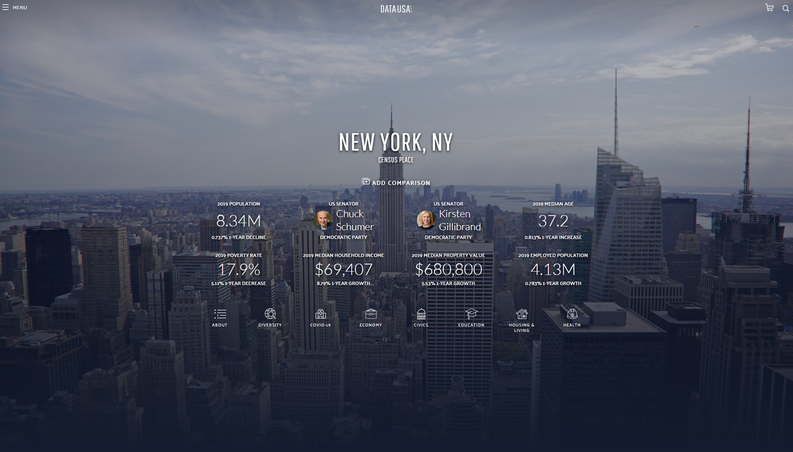
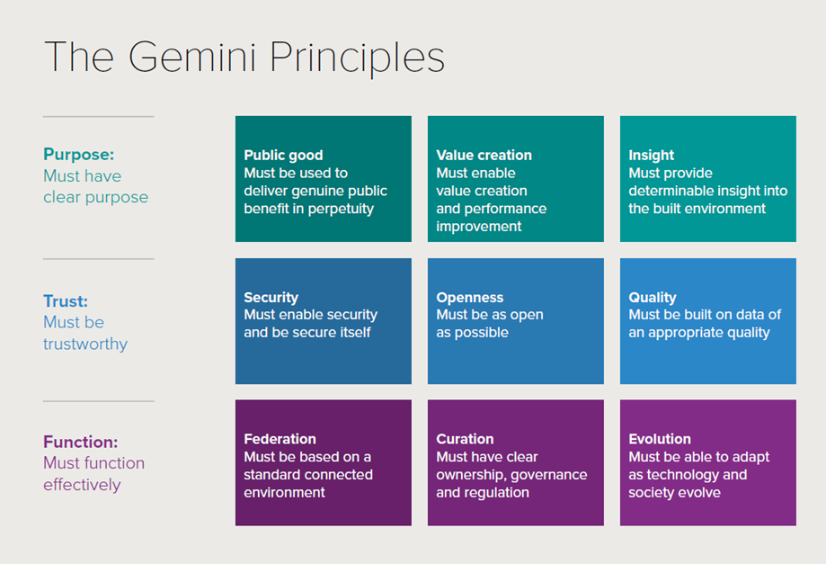

Smart cities, urban big data, digital twins and other buzz terms
Outline
Big data vs. just data
Smart city
Urban dashboards
Digital twins
Big data vs. just data
Digital traces human activities leave behind
Accidental (Arribas-Bel 2014)
Why?
Computing power
Digital turn
Geospatial technologies [important for urban researchers]
Big data vs. just data
Volume [how big is big?]
Velocity, being created in or near real time
Variety, being structured and unstructured in nature
Exhaustive in scope, capture entire populations or systems
Fine-grained in resolution
Relational in nature, common fields that enable the merging of different data sets
Flexible, extensionable (can add new fields easily) and scalable (can expand in size rapidly) (Kitchin 2013).
Or, whatever doesn’t fit in an excel spreadsheet (Batty, anecdotal)
Big data vs. just data
Biases
Need for new methods
Accidental
Big data can speak for themselves. Not really (Kitchin 2013)
Smart cities, different approaces
The digital technologies approach
Urban infrastructure and services are managed computationally
Networked digital instrumentation embedded into the urban fabric
Continuous streams of data that dynamically feed into management systems and control rooms
New forms of governmentality
Smart cities, different approaches
The outputs approach
Strategic use of information and communications technology (ICT)
➔ smarter citizens, workers, policy, and programs
➔ innovation, economic development, and entrepreneurship
➔ urban resilience and sustainability
Smart cities, different approaches
The just approach
ICT-led, citizen-centric model of development
➔ social innovation and social justice, civic engagement and activism
➔ transparent and accountable governance
Smart cities, different approaches
In reality…
… a blend of all these approached
Rio de Janeiro, Brazil: The first smart city
Smart cities and data
(Smart) cities generate much more data nowadays
- e-government systems, city operating systems, centralized control rooms, digital surveillance, predictive policing, intelligent transport systems, smart grids, sensor networks, building management systems, civic apps … (Kitchin and Moore-Cherry 2021)
Smart cities and data
Local authorities are under pressure to release open data for:
public scrutiny
civic apps
Data reuse:
internally facing
externally facing
Dashboards
A visual display of the most important information needed to achieve one or more objectives; a consolidated and arranged on a single screen so the information can be monitored at a glance (Few and Edge 2007)
Dashboards
Transparency, open government philosophy, accountability (Young, Kitchin, and Naji 2022)
Improve user’s ’span of control of large and complex data
Share outputs
Dashboards
Not just neutral, technical tools
Translators and engines rather than mirrors
Reductive in nature (vs. the complex nature of cities)
Decontextualize cities (Kitchin, Maalsen, and McArdle 2016)
London dashboard
NYC Dashboard

Digital twins
A mirror image of a physical process that is articulated alongside the process in question, usually matching exactly the operation of the physical process which takes place in real time
A variety of digital simulation models that run alongside real-time processes that pertain to social and economic systems as well as physical systems
Models are simplifications not replications of the real thing
Digital twins

Source: (Bolton et al. 2018)